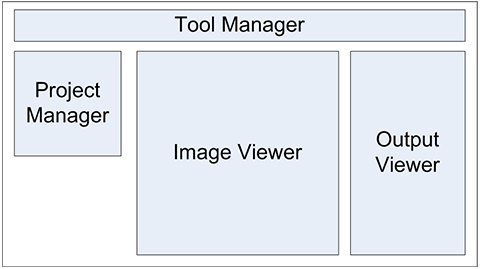

Cell Analyzer Overview
Cell Analyzer is an application for detecting bacteria cells on an image and extracting their features.
It was developed mainly to process images of bacteria cultures acquired with an ordinary USB web camera attached to a microscope.
The model of the camera used for testing was MDCE-5c and usage of this camera is recommended for this application.
The KKK camera comes with software for image and video capturing and taking images with it at default settings in most cases is enough
for correct cell detection.
The whole workspace of the Cell Analyzer could be divided into four functional parts: tool manager, project manager, image viewer and
output viewer.

Structure of the Cell Analyzer's workspace
Tool manager contains different processing, image handling and other tools.
Project manager handles adding files for processing, manual selection of samples and specifying processing parameters.
Image viewer displays added images and detected bacteria cells and selected samples.
Output viewer is responsible for displaying features extracted from the detected bacteria cells.